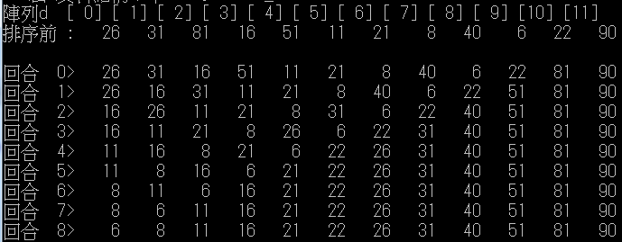
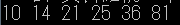
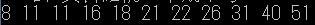
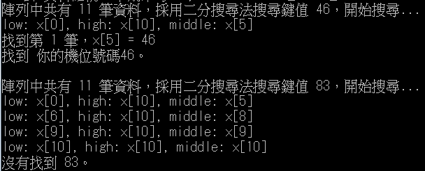

class BubbleSort{
// ------------------
// 列印原始資料
// ------------------
public static void printHeader(int [] d){
int i = 0;
System.out.print("陣列d ");
while( i < d.length)
System.out.printf(" [%2d]", i++);
System.out.println();
System.out.print("排序前 :");
for(int x : d)
System.out.printf("%5s", x);
System.out.println();
System.out.println();}
// --------------------
// 泡沫排序法
// --------------------
public static void sortData(int [] d){
int i, j,temp;
int k = d.length - 1;
boolean x = true;
for (i = 0; i < (d.length - 1); i++){
x = true;
for(j = 0; j < k; j++){
if(d[j] > d[j+1]){
x = false;
temp = d[j];
d[j] = d[j+1];
d[j+1] = temp;}
}
k--;
if (x == true)
break;
System.out.printf("回合 %2d>", i);
printData(d);}
}
// -------------------------
// 印出陣列d的內容
// -------------------------
public static void printData(int [] d){
for(int i : d)
System.out.printf("%5s", i);
System.out.println();}
}
class hw_1{
public static void main(String [] args){
int [] d = {26, 31, 81, 16, 51, 11, 21, 8, 40, 6, 22, 90};
BubbleSort.printHeader(d);
BubbleSort.sortData(d);}
}

public class Mid_1 {
public static void main(String[] args) {
int insert_sort[] = {14, 21, 81, 10, 25, 36};
int i=0, j=insert_sort.length-1;//起始值
int t;//暫存
for(i=1 ; i<=insert_sort.length-1 ; i++){
t = insert_sort[i];
//比最小向右移動
//j = i-1, 從要加入的那個數字的左邊那一個開始比起
//j--, 慢慢向左比
for(j= i-1 ; j>=0 ; j--){
if(insert_sort[j]>t){
insert_sort[j+1] = insert_sort[j];}
else {
break;}
}
insert_sort[j+1] = t;}
for(int k=0 ; k< insert_sort.length ; k++){
System.out.print(insert_sort[k] + " ");}
}
}

public class Mid_2 {
public static void main(String[] args) {
int select_sort[] = {26, 31, 18, 16, 51, 11, 21, 8, 40, 11, 22};
int temp=0;
for(int i=0 ; i< select_sort.length; i++){
for(int j=i+1; j< select_sort.length; j++){
if(select_sort[j]< select_sort[i]){
temp = select_sort[i];
select_sort[i] = select_sort[j];
select_sort[j] = temp;}
}
}
for(int i=0 ; i< select_sort.length ; i++){
System.out.print(select_sort[i] + " ");}
}
}

class search{
int no_found, no_compare;
int binary_search(int S_Key, int x[]){
int i, j, low = 0, high = x.length - 1;
no_found = 0;
no_compare = 0;
if(S_Key < x[low] || S_Key > x[high]){
System.out.println("陣列中不存在鍵值 " + S_Key + "。\n");
return no_found;}
while(low <= high){
i = (low + high) / 2;
no_compare++;
System.out.println("low: x[" + low + "], high: x[" + high + "], middle: x[" + i + "]");
if(S_Key == x[i]){
no_found++;
System.out.println("找到第 " + no_found + " 筆，x[" + i + "] = " + S_Key);
search_next(S_Key, x, i);
break ;}
if(S_Key > x[i])
low = i + 1;
else
high = i - 1;}
if(no_found > 0)
System.out.println("找到 你的機位號碼" + S_Key + "。\n");
else
System.out.println("沒有找到 " + S_Key + "。\n");
return no_found;}
void search_next(int S_Key, int x[], int i){
int j;
j = i - 1;
while(j >= 0){
no_compare++;
if(S_Key == x[j]){
no_found++;
j--;}
else
break;}
j = i + 1;
while(j < x.length){
no_compare++;
if(S_Key == x[j]){
no_found++;
j++;}
else
break;}
}
}